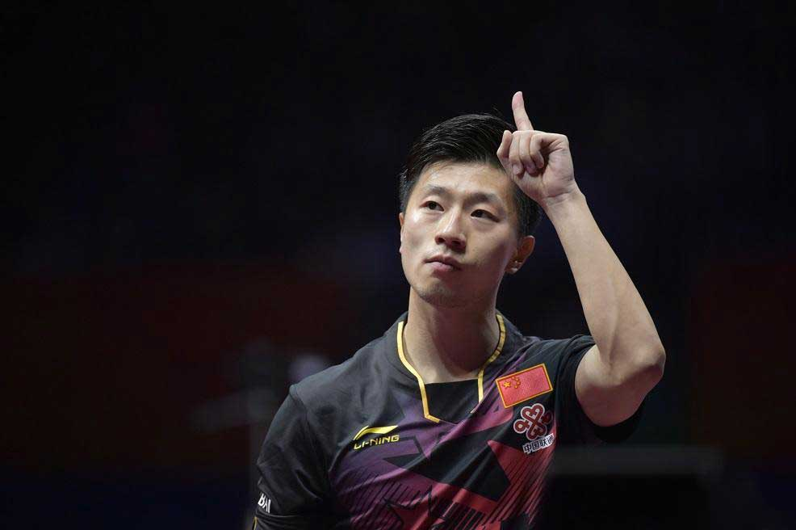
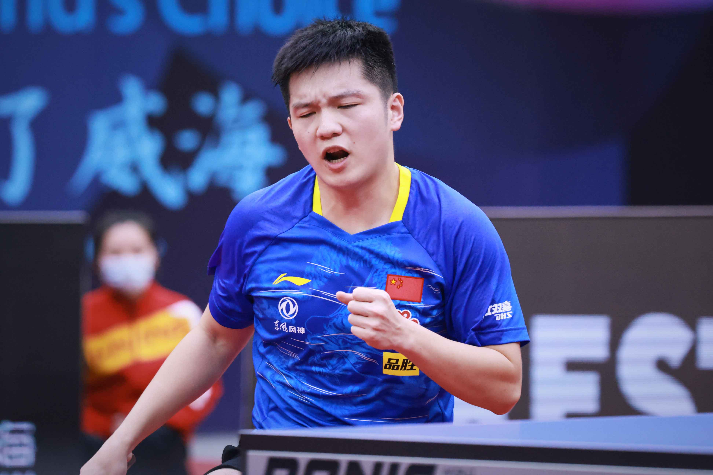

许昕:1990年1月8日出生于江苏省徐州市,中国男子乒乓球队运动员,亚洲乒乓球联盟副主席。2004年,许昕在世界少年挑战赛上同时获得男团、男单、男双冠军。2012年,许昕在国际乒联职业巡回赛总决赛中夺得男单冠军并在次年总决赛男单决赛中,以4比3战胜马龙,成为继马龙之后第二位获得男单世界冠军的左手运动员。2014年,仁川亚运会上许昕获得男单、男团冠军及男双亚军。2015年10月的全锦赛上,许昕同时拿到男团、男单和男双三项冠。2016年,获得里约奥运会乒乓球男团冠军。2016年12月,许昕进入国际乒联名人堂。2017年5月,获得杜塞尔多夫世乒赛男双冠军及男单季军;9月,率领上海队夺得全运会乒乓球男团冠军。8月6日,东京奥运会乒乓球男团决赛,由马龙、许昕和樊振东组成的中国男团,拿下乒乓球男团冠军。10月3日,当选亚洲乒乓球联盟副主席。
马龙:1988年10月20日出生于辽宁省鞍山市,中国男子乒乓球队运动员。效力中国男子乒乓球队，担任队长。马龙是首位集奥运会、世锦赛、世界杯、亚运会、亚锦赛、亚洲杯、巡回赛总决赛、全运会单打冠军于一身的超级全满贯男子选手。 马龙2003年进入国家队;2004年获得世青赛男单冠军;2009年在亚锦赛中夺得团体、男单、男双和混双四冠,是中国的首个四冠王。首位亚锦赛男单三连冠的选手;2013年5月入选国际乒联名堂。2017年6月,德国杜塞尔多夫世乒赛，马龙夺冠； 9月6日,第十三届全运会乒乓球男单决赛，马龙夺冠。 2020年10月,摘得全国乒乓球锦标赛双打金牌。 2021年7月30日,马龙获得东京奥运会乒乓球男单冠军。 8月6日,获得东京奥运会乒乓球男团冠军。 2017年1月15日,获得2016年CCTV体坛风云人物最佳男运动员奖。2017年10月,马龙被评为第十三届全运会北京体育代表团“最佳运动员”。2017年10月,马龙获2017年度大本钟奖体育类十佳华裔运动员。

王楚钦:中国男子乒乓球运动员,现效力于山东魏桥乒乓球俱乐部。2013年,获得全国少年乒乓球锦标赛男子单打和团体双料冠军。2015年12月,升入中国国家乒乓球队一队。2017年12月3日,搭档薛飞获得2017世界青少年锦标赛男双冠军。2018年,随国家队在雅加达亚运会上获得男团七连冠。2022年10月30日,获2022年WTT世界杯决赛男单冠军。5月,获2023年德班世乒赛混双冠军、男双冠军,并获得男单亚军;9月6日,随中国队获2023年乒乓球亚锦赛男团冠军,并获得巴黎奥运会男团资格。9月9日,王楚钦/马龙获2023平昌亚锦赛男双亚军。9月26日至10月2日,在杭州第19届亚运会上,随中国队获乒乓球男团冠军，并获混双冠军、男双冠军、男单冠军。 2023年11月13日,获2023微博竞燃之夜微博年度受欢迎运动员。
樊振东:2012年2月进入中国国家乒乓球队;12月,获得乒乓球世青赛男单、混双、男团冠军。2013年9月,获第12届全运会男团、男双冠军以及男单亚军;11月,在国际乒联巡回赛波兰公开赛上，樊振东成为了乒联巡回赛史上最年轻的男单冠军得主。 2016年10月,男子世界杯乒乓球赛男子单打决赛,夺得个人生涯首个世界三大赛的单打冠军。2018年12月,获2018年国际乒联最佳男运动员。2019年12月,国际乒联巡回赛总决赛男单冠军。 2020年11月,获男子乒乓球世界杯三连冠,第四次在世界杯登顶。2021年7月,获东京奥运会男单亚军、男团冠军;2022年3月,首夺世界乒乓球职业大联盟大满贯男单冠军;11月,樊振东在全国锦标赛上夺冠,成为全锦赛史上首位男单“四冠王”。 2023年3月,成功卫冕WTT大满贯男单冠军;4月,获得2023WTT新乡冠军赛男单冠军; 5月,成功卫冕德班世乒赛男单冠军，为中国队实现世乒赛男单十连冠，同时也成为历史上第八位、中国男乒第七位卫冕世乒赛男单冠军的球员。
